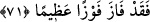

Onun isteğini yerine getirdiler. İbn Sikkît o gece vefât etti. Şaşılacak şeydir İbn Sikkît
halîfenin oğulları Mu‘tezz ve Müeyyed’in hocası olup daha önce onlara şu şiiri
okumuştu:
Kişi dilinin sürçmesinden uğradığı musîbete
Ayağının sürçmesinden dolayı uğramaz
Sözde dilinin sürçmesi başını götürür
Ayağının sürçmesi ise yavaş yavaş iyileşir
71. (Böyle davranırsanız) Allah işlerinizi düzeltir ve günahlarınızı bağışlar. Kim
Allah ve Rasûlüne itâat ederse büyük bir kurtuluşa ermiş olur.
“(Böyle davranırsanız) Allah işlerinizi düzeltir” sizi sâlih amellere muvaffak kılar
ya da amellerinizi kabul edip onlara sevab vererek amellerinizi ıslâh eder/düzeltir.
“Ve” söz ve fiildeki istikametiniz sebebiyle “günahlarınızı bağışlar.” Burada şuna
işâret edilmektedir ki Allah Teâlâ kimi sâlih ameller yapmaya muvaffak kılarsa, bu o
kimsenin günahlarının mağfiret edildiğine delildir.
“Kim” buradaki mükellefiyetlerin de içinde dâhil olduğu emir ve nehiylerde “Allah
ve Rasûlü’ne itâat ederse” her iki cihanda “büyük bir kurtuluşa ermiş” dünyâda
mahmûd/övülmüş, âhirette mes‘ûd yahut korktuğundan emin, umduğuna nâil “olur.”
Tâat, emre muvâfakat/emrin gereğini yerine getirmek, ma‘sıyet ise emre muhâlefet
etmektir.
et-Te’vîlâtü’n-Necmiyye’de şöyle denilmiştir: “Allah Teâlâ îmanın ancak takvâ ile
tam ve kamil olacağına işâret etmektedir. Takvâ ise akid (îtikad) olarak tevhîd
cehd/gayret olarak da sınırları korumaktır. Takvâ amellerinin doğruluğu ancak doğru
sözle hâsıl olur. O da “Lâ ilâhe illallah” sözüdür. Şartlarına riâyet ederek bu kelimeyi
söylemeye devam etmekle Allah sizin takvâ amellerinizi ıslah eder/düzeltir. Şu halde
sözlerinizin doğruluğu amellerinizin doğruluğuna sebeb olur. Sözlerin ve amellerin
doğruluğu ile hallerin doğruluğu hâsıl olur. İşte Allah Teâlâ’nın âyetteki “Allah sizin
günahlarınızı bağışlar” sözü bunu ifâde etmektedir. Bu, rabbânî mağfiret nûru ile
zulmânî hicabların/perdelerin kaldırılmasından ibârettir. “Kim” emir ve yasaklarında
“Allâh’a ve” sırât-ı müstakîme irşâdı ve O’na tâbi olmak konusunda “Rasûlü’ne itâat
ederse” hüviyyetin vücûdunda fenâ, rubûbiyyetin bakâsı ile bakâ ve varlığa dâir
hicablardan çıkmak/kurtulmak sûretiyle “büyük bir kurtuluşa ermiş olur.”
Bazıları şöyle demiştir: Kim nefsini tezkiye etme ve kötü sıfatları silme (mahv)
konusunda Allâh’a ve Rasûlü’ne itâat ederse, bu kimse ilahî sıfatlarla süslenmeyi (hâ